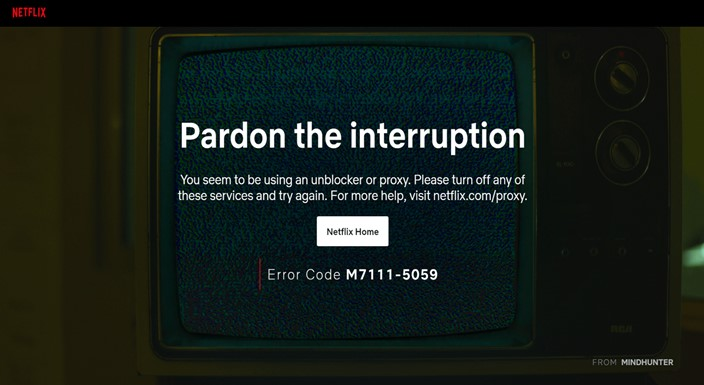
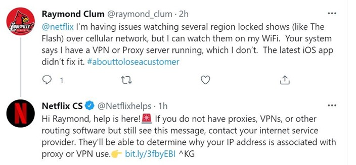

A Netflix está ampliando os esforços para proibir o uso de VPN e proxy para contornar as restrições geográficas do seu catálogo. O serviço de streaming começou a bloquear endereços de IP residenciais, outra forma de "desbloqueio" feita pelos usuários.
Entretanto, a ação está gerando alguns problemas. Diversos clientes que não usam ferramentas de rede virtual privada estão relatando problema de acesso aos conteúdos da plataforma.
Outras Noticias



VPN é um dos principais “inimigos” da Netflix.
Os bloqueios da Netflix já causaram frustrações em vários usuários que usam VPN de forma legítima e sem intenção de burlar as restrições. Algo que foi solucionado pelo próprio serviço no ano passado.
Contudo, os usuários encontraram uma solução alternativa para contornar os bloqueios regionais. Algumas pessoas usam endereços de IP residenciais como proxies para parecer que são assinantes regulares de um provedor de internet local.
Ciente dessa prática, a Netflix está bloqueando diversos IPs domésticos nos EUA. Conforme notado por engenheiros do WeVPN, parte dos endereços estão relacionados a clientes de empresas de telecomunicações americanas, como ATeT, Comcast e Verizon.

No Twitter, a Netflix orienta os clientes a entrarem em contato com os provedores de internet.
Milhares de usuários afetados indiretamente
Analistas explicam que a Netflix tem o direito de tomar medidas contra as pessoas que burlam as restrições. Entretanto, as ações não deveriam prejudicar os clientes legítimos da plataforma.
"O dano colateral é que centenas de milhares de assinantes legítimos da Netflix estão impedidos de acessar o catálogo completo do país em sua casa", informou um porta-voz do WeVPN.
Até o momento, a Netflix não se pronunciou oficialmente sobre o assunto. Porém, a plataforma orienta que os clientes afetados entrem em contato com a provedora de internet e verifiquem se o IP não está associado ao uso de VPN.
Essa é uma sugestão bastante peculiar, afirmam os especialistas. Principalmente pelo fato de que o bloqueio está ocorrendo por parte do próprio serviço.
Veja Também Reviwes